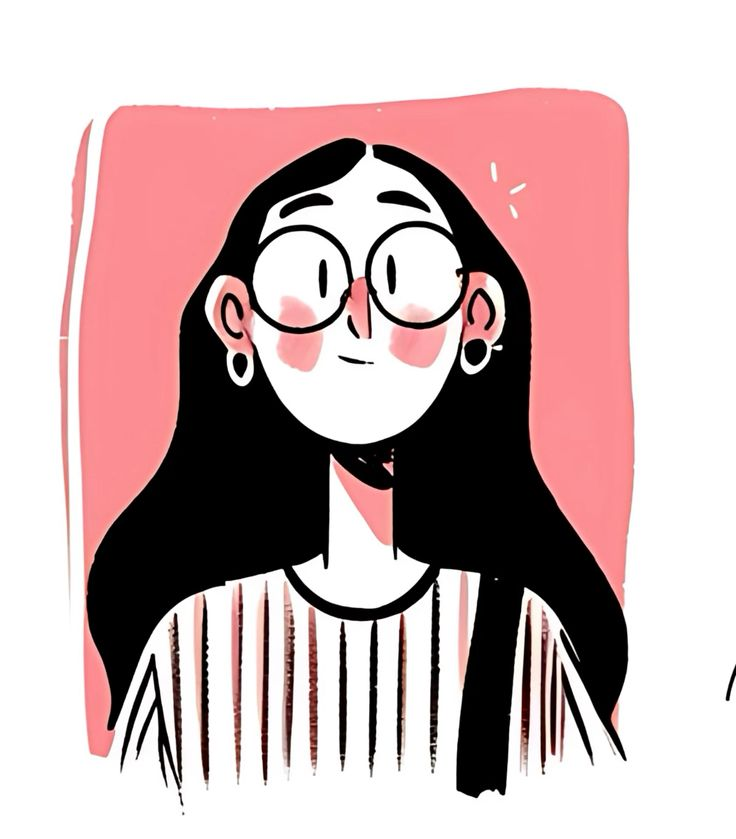

Hasheni Amunugama
A Computer Science undergraduate.
I'm learning how to bring technical knowledge and professional skills together, one experience at a time.
This portfolio shares my journey through the Professional Skills module: the people I worked with, the activities we explored, and the lessons I take forward.